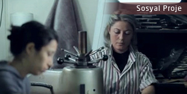
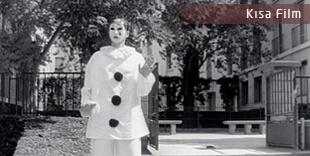

- 
TÜSİAD 40.Yıl Çalışma Hayatında Kadın
Yapımcı: Dinamo İstanbul - Enis Özkul Proje: TÜSİAD Kadın Erkek Eşitliği | Çalışma Grubu Başkanı Nur Ger, grup üyeleri | Yönetmen: Gökçe Pehlivanoğlu | Görüntü Yönetmeni: Sedat Şahin | Seslendiren: Derya Alabora..
-
Yeni Türkü – Eyvallah klibi online!
Yeni Türkü'nün 'Şimdi ve Sonra' albümünün 'Eyvallah' adlı parçasına çektiğimiz klip artık internet üzerinden de izlenebilmekte…
- 
Pierrot Yaşayan Heykel
Yönetmen: Gökçe Pehlivanoğlu | Senaryo: Gökçe Pehlivanoğlu | Görüntü Yönetmeni: Gökçe Pehlivanoğlu | Kurgu: Gökçe Pehlivanoğlu | Ekip: Brian Kohn, Zachary Kramer, Liza Doulkina | Oyuncular: Mehdi Kellou ..
Lunaroom - News

SineMASAL Teaser : SineMASAL Açık Hava Sinema Festivali Tanıtım Filmi
Bu sene, SineMASAL Açık Hava Sinema Festivali‘nin ilkini düzenliyoruz. 17-30 Haziran 2013tarihlerinde... Devamı..

Yeni klip İsviçre'li grup The Beauty of Gemina'ya
Klibin öykü kısmı için İstanbul’da gerçekleşen çekimlerin yönetmenliğini Gökçe Pehlivanoğlu üstlendi. Devamı..

Gökçe Pehlivanoğlu Showreel Ocak 2013
Gökçe Pehlivanoğlu'nun videoya ilk başladığı günden bugüne tam 10 sene geçti. İşte bu 10 senenin özeti... Devamı..
Lunaroom - News

SET UP Fotoğraf Sergisi Galata Fotoğrafhane'sinde
Sergi son kez İstanbul'da! 23 Mart-18 Nisan tarihlerinde Galata Fotoğrafhanesi'nde gezilebilir.. Devamı..

2. Psikeart Günleri
Gökçe Pehlivanoğlu, 2. Psikeart Günleri'nde Kim Ki Duk Sineması başlıklı panelde moderatörlük yaptı. Devamı..

Fotoğraf Dergisi Şubat-Mart 2013
Türkiye’nin en köklü fotoğraf dergilerinden Fotoğraf Dergisi’nin Şubat-Mart 2013 sayısında, Gökçe Pehlivanoğlu fotoğrafları, kapak ve portfolyo bölümünde yer aldı Devamı..